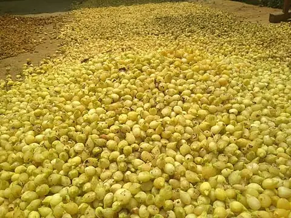

Main course · Popular in Central forests and East
Mahua bhat
Mahua bhat is made with wild mahua, a favourite in Central forests and East.

How do you make mahua bhat?
Dried mahua flowers cooked into rice for natural sweetness. A tribal staple.
Wild ingredients
- Mahua (Madhuca longifolia): in season March to June
Watch the recipe

Video: Village tribal cooking official on YouTube